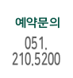
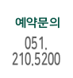

예약 및 상담을 원하시면 전화주세요.
051. 210. 5200

월 ~ 목 AM 10 : 00 ~ PM 19 : 00
금 요 일 AM 10 : 00 ~ PM 20 : 00(야간 진료)
토 요 일 AM 10 : 00 ~ PM 14 : 00
점 심 시 간 PM 13 : 00 ~ PM 14 : 00
※ 토요일 점심시간 없음 / 일요일 및 공휴일 휴진
중앙역 방향에서 오실 때 : 중앙역 2번 출구
Add. 부산광역시 중구 중앙대로 26 다원중앙타워 3층
Tel. 051.210.5200 Fax. 051. 2109.5200
주차 안내. 푸른주차장(부산 중구 대청로156번길 14) 주차장 약도보기
 
